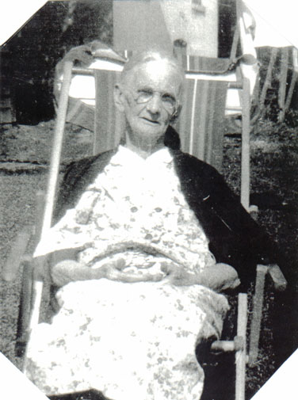

| Catherine Esther Higgins was born April 8th, 1859 to Anna and Andrew Higgins in the parish of Kinnitty, Birr, Co. Offaly, Ireland. She immigrated to America with her Parents in 1863. She married a fellow Irish immigrant, Michael Burns, and together made a home in Cazenovia, NY. |
|
|
 |
Michael died in 1910. Catherine followed him September 28th, 1943. |